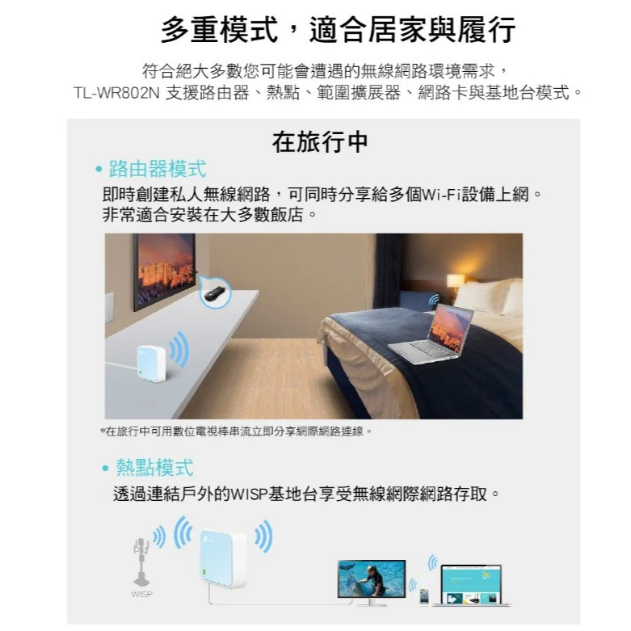
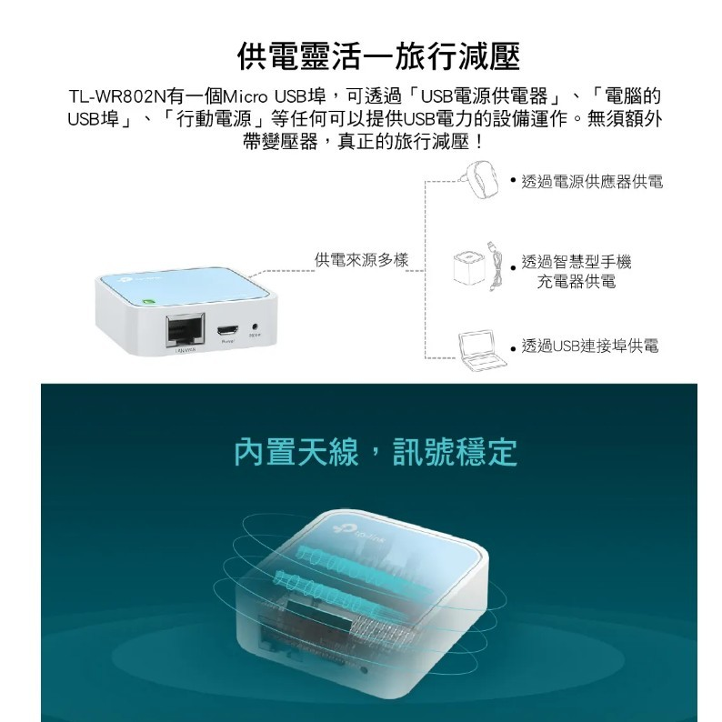

TP-LINK TL-WR802N 300M 無線AP 攜帶型（USB供電）無線分享器 路由器
$329
$499
-66%
已售出 3,425
預計送達時間：下單後3~5天
運費：$0 起
全球最小型分享器，出差旅行都方便。
- 超便攜設計，體積僅手掌大小，輕鬆放入口袋或包包
- 支援 USB 供電，可使用行動電源或任何 USB 插座供電
- 300Mbps 高速無線傳輸，流暢影音不卡頓
- 多模式隨意切換：無線路由器/AP/中繼器/橋接模式
- 內建防火牆，提供安全穩定的無線網路環境
產品特色
基本資訊
◆ 型號：TP-LINK TL-WR802N
◆ 保固期：3年（需保留購買憑證）
◆ 產品尺寸：57 x 57 x 18 mm
◆ 重量：45g（超輕量設計）
核心規格
◆ 無線標準：IEEE 802.11n/b/g
◆ 無線速率：300Mbps（2.4GHz頻段）
◆ 傳輸距離：室內50公尺／室外100公尺
◆ 天線類型：內建高增益天線
硬體配置
◆ 處理器：高性能晶片組
◆ 記憶體：DDR2 64MB
◆ 接口：1個10/100Mbps WAN/LAN自適應端口
◆ 供電方式：Micro USB（5V/1A）
進階功能
◆ 支援IP QoS頻寬控制
◆ 家長監護模式
◆ 訪客網路隔離
◆ 支援VPN穿透（PPTP/L2TP/IPSEC）
環境需求
◆ 工作溫度：0℃~40℃
◆ 儲存濕度：10%~90% 不凝結
同級產品優勢比較
| 關鍵功能 | TL-WR802N | 他牌同級產品 |
|---|---|---|
| 供電便利性 | USB通用供電 | 需專用變壓器 |
| 模式切換 | 4種一鍵切換 | 僅固定模式 |
* 基於2023年同價位產品測試數據
3分鐘快速設定
1
連接電源
使用任何USB接口（電腦/充電頭/行動電源）供電
2
選擇模式
按住Mode鍵3秒切換至所需模式
常見問題解答
可透過機身LED燈號判斷：
綠燈常亮：路由器模式
藍燈閃爍：AP模式
實測穩定支援15-20台設備，建議同時在線設備不超過10台以獲得最佳速度
客戶真實評價
宿舍也能用！
很實用，包裹到貨速度迅速，包裝也很完好！
不適合高速需求，但一般用途 OK
用在咖啡廳或飯店的 Wi-Fi 再分享給多個裝置還算穩定，但如果你要拿它來打線上遊戲或大量傳輸檔案，300M 還是會有瓶頸。不過以這個價位來說已經不錯了。
出國旅行必備！
我已經帶它去過日本、泰國、韓國，遇到有線網路或需要中繼 Wi-Fi 的情況都能用，插行動電源就能開機。真的非常實用，還輕到幾乎沒重量！
...